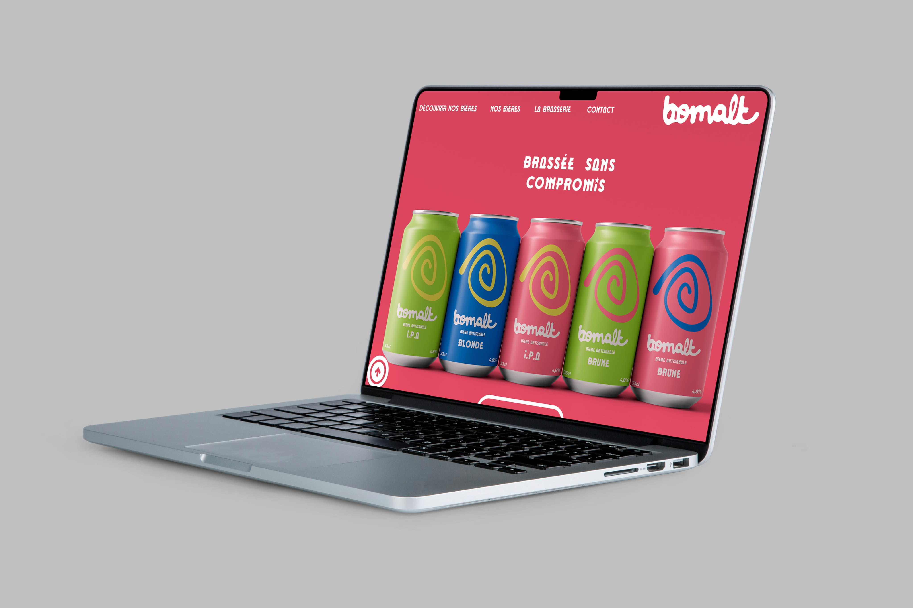
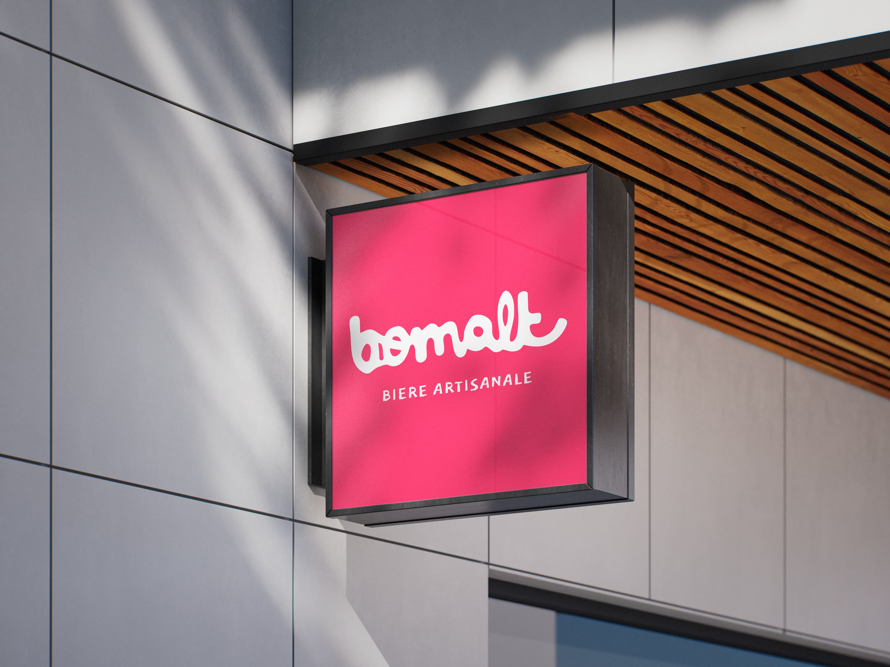

bomalt
Salut, je m’appelle Thomas PENAUD,
Je suis photographe, designer graphique et actuellement étudiant en
école d’image.
Passionné par la création visuelle sous toutes ses formes, j’aime
explorer l’image sous toutes ses formes pour raconter des histoires
uniques et percutantes.
À travers mes projets, je cherche à allier technique et créativité, en
apportant un regard neuf et sensible aux commandes que je réalise, que
ce soit en photographie ou en design graphique.
Je travaille aussi bien sur des projets personnels que sur des
collaborations, et je suis toujours à la recherche de nouvelles
opportunités pour apprendre et évoluer dans le monde de l’image.
N’hésite pas à parcourir mon travail et à me contacter pour échanger !




